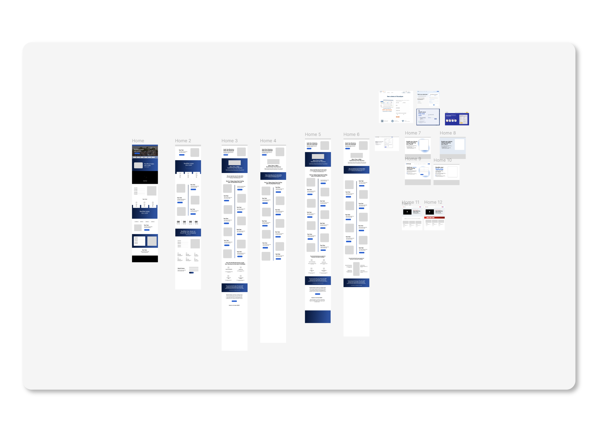
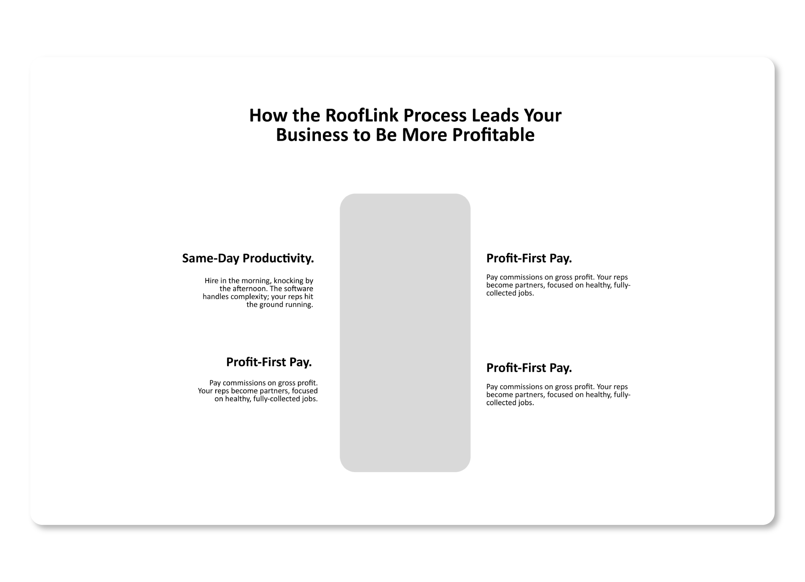
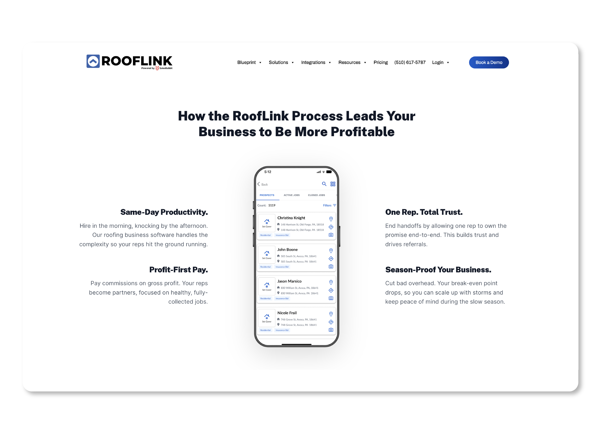

The Deep
Dive.
Wireframes.
Visuals.
The
Result.
Roofing owners are notoriously busy. The legacy Rooflink site was cluttered, making it difficult for owners to quickly understand the value Rooflink could bring to their business.
For the Rooflink redesign, I prioritized a 'zero-friction' layout. By utilizing high-contrast typography, I transformed the site into an efficient gateway that respects the user's time and showcases the product's power without the clutter.
Rooflink isn't just a tool; it's a digital back office. To communicate this, I shifted the visual strategy toward clean mockups that showcase the app's robust feature set. By stripping away visual clutter, I allowed the platform's capabilities to take center stage, ensuring business owners could immediately see how the software could work for their business.
The redesigned Rooflink website successfully translates a complex software platform into a streamlined, approachable digital experience. By prioritizing a storytelling format and a "zero-friction" layout, the new site positions Rooflink as the professional back-office solution for roofers. By removing visual noise and refreshing the SEO, the updated site saw a rise in demo requests by 8% within the first month of launch.




The Deep Dive.
Roofing owners are notoriously busy. The legacy Rooflink site was cluttered, making it difficult for owners to quickly understand the value Rooflink could bring to their business.
Wireframes.
For the Rooflink redesign, I prioritized a 'zero-friction' layout. By utilizing high-contrast typography, I transformed the site into an efficient gateway that respects the user's time and showcases the product's power without the clutter.
Visuals.
Rooflink isn't just a tool; it's a digital back office. To communicate this, I shifted the visual strategy toward clean mockups that showcase the app's robust feature set. By stripping away visual clutter, I allowed the platform's capabilities to take center stage, ensuring business owners could immediately see how the software could work for their business.
The Result.
The redesigned Rooflink website successfully translates a complex software platform into a streamlined, approachable digital experience. By prioritizing a storytelling format and a "zero-friction" layout, the new site positions Rooflink as the professional back-office solution for roofers. By removing visual noise and refreshing the SEO, the updated site saw a rise in demo requests by 8% within the first month of launch.